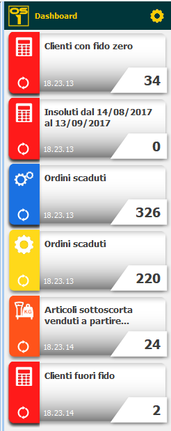
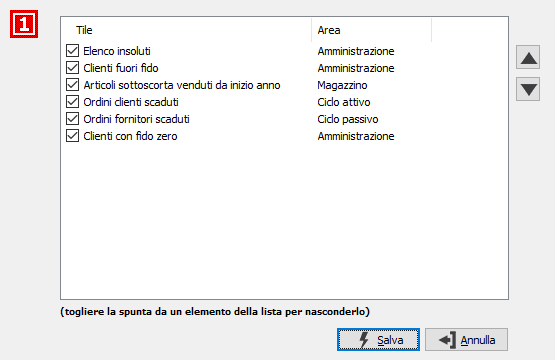

Dashboard

Il bottone ,
presente sulla toolbar, consente di nascondere/mostrare la Dashboard che
viene mostrata nella parte destra dell'area di lavoro; al suo interno
possono essere mostrate informazioni di particolare interesse per l'utente
da tenere costantemente sotto controllo. Ognuna di queste informazioni
(denominata tile ossia piastrella) è liberamente definibile, è abbinata
ad una scelta di menù e sulla base di essa viene presentata o meno all’utente,
il quale può comunque decidere se visualizzarla o meno e stabilirne la
posizione all’interno della dashboard.
,
presente sulla toolbar, consente di nascondere/mostrare la Dashboard che
viene mostrata nella parte destra dell'area di lavoro; al suo interno
possono essere mostrate informazioni di particolare interesse per l'utente
da tenere costantemente sotto controllo. Ognuna di queste informazioni
(denominata tile ossia piastrella) è liberamente definibile, è abbinata
ad una scelta di menù e sulla base di essa viene presentata o meno all’utente,
il quale può comunque decidere se visualizzarla o meno e stabilirne la
posizione all’interno della dashboard.
Le tiles vengono automaticamente aggiornate al momento dell’accesso ad OS1 e rinfrescate ad intervalli predefiniti. Su semplice richiesta l’operatore può aggiornare in tempo reale i valori presentati cliccando sull'immagine . Ogni tile presenta un valore di sintesi principale con possibilità di aggiungere altri valori di sintesi nell’hint della tile stessa. È possibile visualizzare il dettaglio dei dati che compongono i dati di sintesi e/o richiamare una scelta di OS1.
Il bottone , consente di richiamare la configurazione; dalla finestra è possibile modificare l'ordinamento delle tiles e nascondere gli elementi presenti; togliendo la spunta l'elemento non sarà più mostrato e tramite i tasti freccia è possibile spostare l'elemento selezionato.
